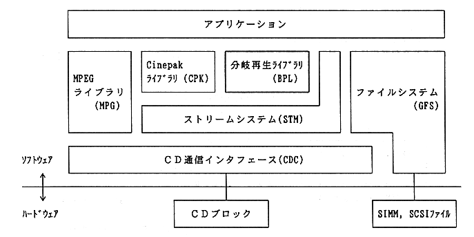

The branch playback library is a library for reading a stream without interruption based on a predetermined scenario. Thereby, it is possible to read the stream while branching smoothly.
However, the branch playback library only manages the streams necessary for branching. Decoder-dedicated libraries (MPEG, Cinepak, etc.) are used to play moving images from the stream.
1.1 Library configuration
CD-related library configuration is shown in Figure 1.1.

Figure 1.1 CD-related library configuration
In order to use the branch playback library, each library of the stream system, file system, and CD communication interface is required.